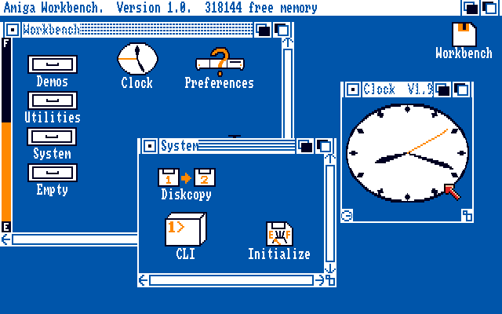
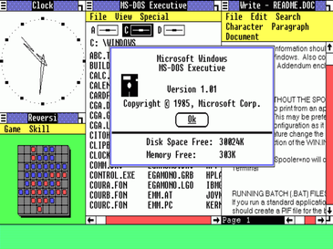

The Graphical User Interface
1985 brought with it the Amiga Workbench. This cutting edge computing machine featured a GUI with color graphics. The Amiga could display four colors: black, white, blue, and orange.
Unfortunately for Amiga, 1985 held something else in store. The first version of Microsoft’s Windows operating system, Windows 1.0, was released roughly five months after the Amiga Workbench. The first version of Windows supported a palette of 64 colors, though it was only capable of displaying 16 different colors at once due to memory limitations. With access to such a wide variety of colors, using a computer no longer seemed to be a monotonous task from the layman’s point of view. These vibrant colors were attractive, vivid and oftentimes uncommon in daily life.
By 1990, graphical user interfaces were supporting 256 colors at a time. Also considering the integration rate of the personal computer into the daily lives of the populace at this time, the stimulating visuals of colorful computer screens were sweeping across the world. Operating systems utilized this power to demand focus, instruct direction, and wordlessly educate.